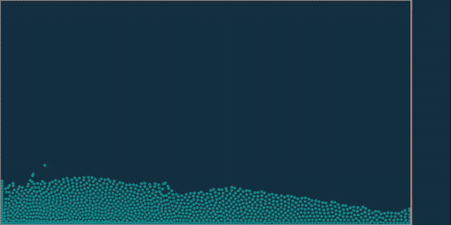
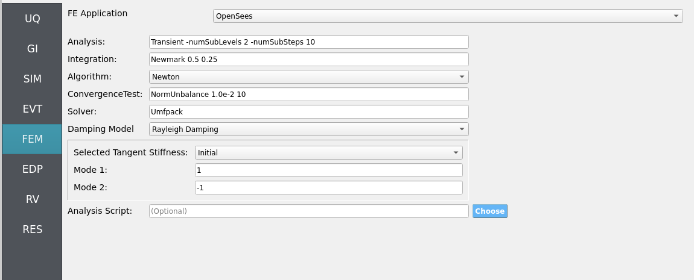
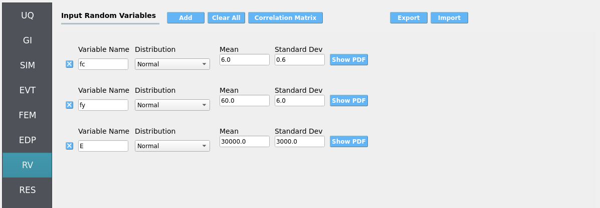
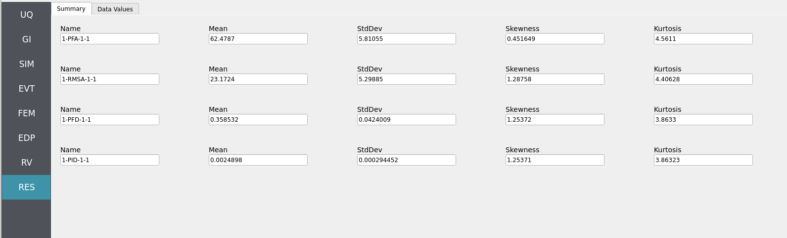
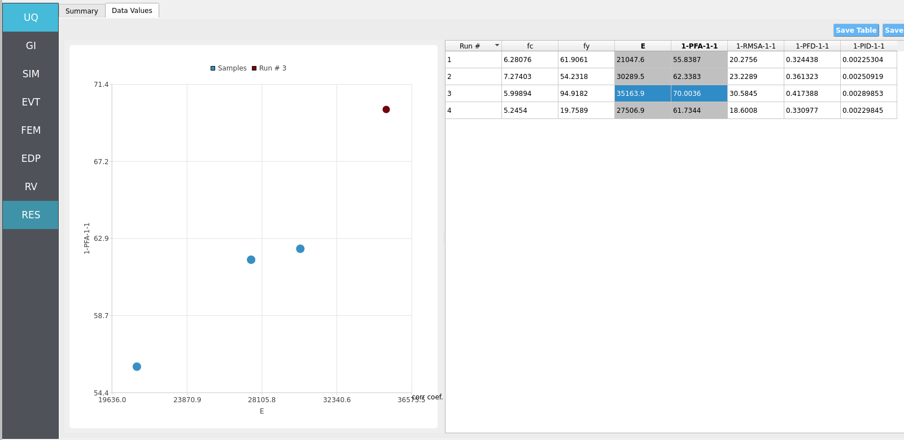
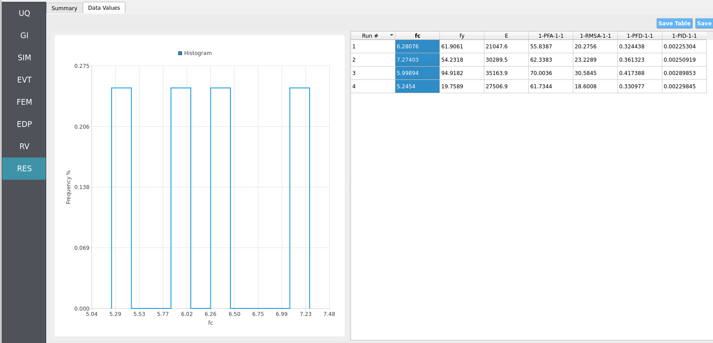
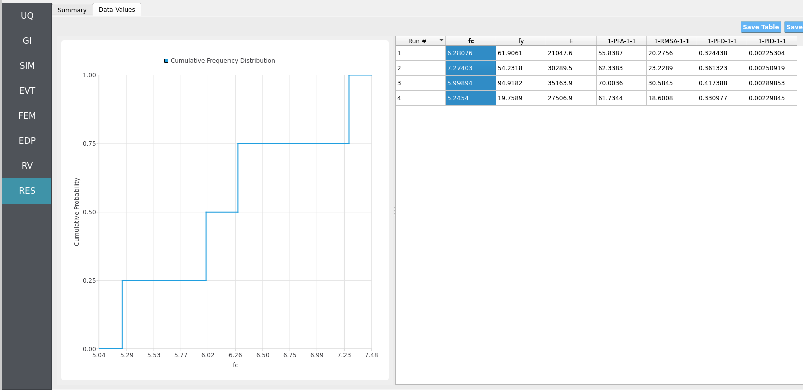

4.2. Real-Time Wave-Solver - Simple Piston Generated Wave Loading - Taichi Event
Problem files |
4.2.1. Overview
{kind=link}

Forward sample an uncertain structure loaded by a physics-based wave maker piston’s generated wave in real-time. This workflow uses the high-performance Taichi Lang on your local PC to accelerate simulations using your CPU or your GPU [Hu2019]. We numerically simulate position-based fluid dynamics (PBFD) in 2D: the right boundary is a moving wall (wave-maker piston), the center is a water particle mass, and the left is a rigid wall representing the structure onto which HydroUQ maps hydrodynamic loads for an OpenSees model. This replicates the basic physics of wave-makers in real facilities, such as Oregon State University’s Large Wave Flume and Directional Wave Basin. The OpenSees structure is a 2D three degree-of-freedom portal frame with uncertain variables.
Note
Keep GI, SIM, EVT, and FEM units consistent. Match Taichi’s PBFD length/time scales and OpenSees integration settings (e.g., time step). Verify any force/unit conversions used during load mapping.
4.2.2. Set-Up
4.2.2.1. Step 1: UQ
Configure Forward sampling to explore structural/material uncertainty under a fixed piston-generated wave signal.
Engine: Dakota
Forward Propagation (e.g., LHS) with
samples(e.g.,4) and a reproducibleseed(e.g.,1).

4.2.2.2. Step 2: GI
Set General Information and Units. Ensure that length/time units are consistent with the Taichi Lang script’s and OpenSees model’s parameters.
Project name:
hdro-0010Location/metadata: optional
Units: choose a consistent set (e.g., N-m-s or kips-in-s)

4.2.2.3. Step 3: SIM
The structural model is as follows: a 2D, 3-DOF OpenSees portal frame in OpenSees, OpenSees.

Fig. 4.2.2.3.1 2D 3-DOF portal frame under stochastic wave loading (JONSWAP)
For the OpenSees generator the following model script, Frame.tcl , is used:
Click to expand the OpenSees input file used for this example
1# Create ModelBuilder (with two-dimensions and 3 DOF/node)
2
3model basic -ndm 2 -ndf 3
4
5set width 360
6set height 144
7
8node 1 0.0 0.0
9node 2 $width 0.0
10node 3 0.0 $height
11node 4 $width $height
12
13fix 1 1 1 1
14fix 2 1 1 1
15
16# Concrete ( Youngs Modulus, Yield Strength, and Compressive Strength)
17pset fc 6.0
18pset fy 60.0
19pset E 30000.0
20uniaxialMaterial Concrete01 1 -$fc -0.004 -5.0 -0.014
21uniaxialMaterial Concrete01 2 -5.0 -0.002 0.0 -0.006
22
23# STEEL
24uniaxialMaterial Steel01 3 $fy $E 0.01
25
26set colWidth 15
27set colDepth 24
28set cover 1.5
29set As 0.60; # area of no. 7 bars
30set y1 [expr $colDepth/2.0]
31set z1 [expr $colWidth/2.0]
32
33section Fiber 1 {
34
35 # Create the concrete core fibers
36 patch rect 1 10 1 [expr $cover-$y1] [expr $cover-$z1] [expr $y1-$cover] [expr $z1-$cover]
37
38 # Create the concrete cover fibers (top, bottom, left, right)
39 patch rect 2 10 1 [expr -$y1] [expr $z1-$cover] $y1 $z1
40 patch rect 2 10 1 [expr -$y1] [expr -$z1] $y1 [expr $cover-$z1]
41 patch rect 2 2 1 [expr -$y1] [expr $cover-$z1] [expr $cover-$y1] [expr $z1-$cover]
42 patch rect 2 2 1 [expr $y1-$cover] [expr $cover-$z1] $y1 [expr $z1-$cover]
43
44 # Create the reinforcing fibers (left, middle, right)
45 layer straight 3 3 $As [expr $y1-$cover] [expr $z1-$cover] [expr $y1-$cover] [expr $cover-$z1]
46 layer straight 3 2 $As 0.0 [expr $z1-$cover] 0.0 [expr $cover-$z1]
47 layer straight 3 3 $As [expr $cover-$y1] [expr $z1-$cover] [expr $cover-$y1] [expr $cover-$z1]
48
49}
50
51
52# Define column elements
53# ----------------------
54
55# Geometry of column elements
56# tag
57
58geomTransf Corotational 1
59
60# Number of integration points along length of element
61set np 5
62
63# Create the coulumns using Beam-column elements
64# e tag ndI ndJ nsecs secID transfTag
65set eleType dispBeamColumn
66element $eleType 1 1 3 $np 1 1
67element $eleType 2 2 4 $np 1 1
68
69# Define beam elment
70# -----------------------------
71
72# Geometry of column elements
73# tag
74geomTransf Linear 2
75
76# Create the beam element
77# tag ndI ndJ A E Iz transfTag
78element elasticBeamColumn 3 3 4 360 4030 8640 2
79
80# Define gravity loads
81# --------------------
82
83# Set a parameter for the axial load
84set P 180; # 10% of axial capacity of columns
85
86# Create a Plain load pattern with a Linear TimeSeries
87pattern Plain 1 "Linear" {
88
89 # Create nodal loads at nodes 3 & 4
90 # nd FX FY MZ
91 load 3 0.0 [expr -$P] 0.0
92 load 4 0.0 [expr -$P] 0.0
93}
94
95# ------------------------------
96# Start of analysis generation
97# ------------------------------
98
99# Create the system of equation, a sparse solver with partial pivoting
100system ProfileSPD
101
102# Create the constraint handler, the transformation method
103constraints Transformation
104
105# Create the DOF numberer, the reverse Cuthill-McKee algorithm
106numberer RCM
107
108# Create the convergence test, the norm of the residual with a tolerance of
109# 1e-12 and a max number of iterations of 10
110test NormDispIncr 1.0e-12 10 3
111
112# Create the solution algorithm, a Newton-Raphson algorithm
113algorithm Newton
114
115# Create the integration scheme, the LoadControl scheme using steps of 0.1
116integrator LoadControl 0.1
117
118# Create the analysis object
119analysis Static
120
121# ------------------------------
122# End of analysis generation
123# ------------------------------
124
125# perform the gravity load analysis, requires 10 steps to reach the load level
126analyze 10
127
128loadConst -time 0.0
129
130# ----------------------------------------------------
131# End of Model Generation & Initial Gravity Analysis
132# ----------------------------------------------------
133
134
135# ----------------------------------------------------
136# Start of additional modelling for dynamic loads
137# ----------------------------------------------------
138
139# Define nodal mass in terms of axial load on columns
140set g 386.4
141set m [expr $P/$g]; # expr command to evaluate an expression
142
143# tag MX MY RZ
144mass 3 $m $m 0
145mass 4 $m $m 0
Note
The first lines containing pset in an OpenSees tcl file will be read by the application when the file is selected. The application will autopopulate the random variables in the RV panel with these same variable names.

These variable names (fc, fy, E) are recognized in Frame.tcl due to use of the pset command instead of set. This is so that RV picks them up automatically. You can try adding new RV parameters in the same way.
Uncertain properties (treated as RVs; see Step 7):
fc: mean6, stdev0.06fy: mean60, stdev0.6E: mean30000, stdev300
4.2.2.4. Step 4: EVT
Load Generator: Taichi Event - 2D PBFD piston wave maker (local, real-time capable).
Typical configuration (adjust to your scenario):
Domain: width/height, particle spacing, boundary conditions (rigid walls at left/bottom; moving wall at right).
Piston motion: stroke amplitude, frequency (or velocity profile), phase start/stop.
PBFD numerics: solver iterations per step, CFL-safe time step, density/stiffness tuning.
Export: per-step force/pressure sampling at the left wall; choose sampling grid/resolution and output rate.
If desired, you can promote piston parameters (e.g., amplitude/frequency) to RVs in future studies; here we keep them deterministic to focus on structural uncertainty.

You will run, and may edit to implement hydrodynamic uncertainty, the following Taichi Lang Python script for position-based fluid dynamics, pbf2d.py:
Click to expand the Python script used for this example
1# Macklin, M. and Müller, M., 2013. Position based fluids. ACM Transactions on Graphics (TOG), 32(4), p.104.
2# Taichi implementation by Ye Kuang (k-ye)
3# Modifications for HydroUQ by Justin Bonus
4
5import math
6import os
7import numpy as np
8
9import taichi as ti
10
11ti.init(arch=ti.gpu)
12
13screen_res = (800, 400)
14screen_to_world_ratio = 10.0
15boundary = (
16 screen_res[0] / screen_to_world_ratio,
17 screen_res[1] / screen_to_world_ratio,
18)
19cell_size = 2.51
20cell_recpr = 1.0 / cell_size
21
22
23def round_up(f, s):
24 return (math.floor(f * cell_recpr / s) + 1) * s
25
26
27grid_size = (round_up(boundary[0], 1), round_up(boundary[1], 1))
28
29dim = 2
30max_frames = 1800
31bg_color = 0x112F41
32particle_color = 0x068587
33boundary_color = 0xEBACA2
34num_particles_x = 60
35num_particles = num_particles_x * 20
36max_num_particles_per_cell = 100
37max_num_neighbors = 100
38time_delta = 1.0 / 20.0
39epsilon = 1e-5
40particle_radius = 3.0
41particle_radius_in_world = particle_radius / screen_to_world_ratio
42
43# PBF params
44h_ = 1.1
45mass = 1.0
46rho0 = 1.0
47lambda_epsilon = 100.0
48pbf_num_iters = 5
49corr_deltaQ_coeff = 0.3
50corrK = 0.001
51# Need ti.pow()
52# corrN = 4.0
53neighbor_radius = h_ * 1.05
54
55poly6_factor = 315.0 / 64.0 / math.pi
56spiky_grad_factor = -45.0 / math.pi
57
58old_positions = ti.Vector.field(dim, float)
59positions = ti.Vector.field(dim, float)
60velocities = ti.Vector.field(dim, float)
61grid_num_particles = ti.field(int)
62grid2particles = ti.field(int)
63particle_num_neighbors = ti.field(int)
64particle_neighbors = ti.field(int)
65lambdas = ti.field(float)
66position_deltas = ti.Vector.field(dim, float)
67# 0: x-pos, 1: timestep in sin()
68board_states = ti.Vector.field(2, float)
69wall_force = ti.Vector.field(dim, float, shape=())
70
71ti.root.dense(ti.i, num_particles).place(old_positions, positions, velocities)
72grid_snode = ti.root.dense(ti.ij, grid_size)
73grid_snode.place(grid_num_particles)
74grid_snode.dense(ti.k, max_num_particles_per_cell).place(grid2particles)
75nb_node = ti.root.dense(ti.i, num_particles)
76nb_node.place(particle_num_neighbors)
77nb_node.dense(ti.j, max_num_neighbors).place(particle_neighbors)
78ti.root.dense(ti.i, num_particles).place(lambdas, position_deltas)
79ti.root.place(board_states)
80
81
82@ti.func
83def poly6_value(s, h):
84 result = 0.0
85 if 0 < s and s < h:
86 x = (h * h - s * s) / (h * h * h)
87 result = poly6_factor * x * x * x
88 return result
89
90
91@ti.func
92def spiky_gradient(r, h):
93 result = ti.Vector([0.0, 0.0])
94 r_len = r.norm()
95 if 0 < r_len and r_len < h:
96 x = (h - r_len) / (h * h * h)
97 g_factor = spiky_grad_factor * x * x
98 result = r * g_factor / r_len
99 return result
100
101
102@ti.func
103def compute_scorr(pos_ji):
104 # Eq (13)
105 x = poly6_value(pos_ji.norm(), h_) / poly6_value(corr_deltaQ_coeff * h_, h_)
106 # pow(x, 4)
107 x = x * x
108 x = x * x
109 return (-corrK) * x
110
111
112@ti.func
113def get_cell(pos):
114 return int(pos * cell_recpr)
115
116
117@ti.func
118def is_in_grid(c):
119 # @c: Vector(i32)
120 return 0 <= c[0] and c[0] < grid_size[0] and 0 <= c[1] and c[1] < grid_size[1]
121
122
123@ti.func
124def confine_position_to_boundary(p):
125 bmin = particle_radius_in_world
126 bmax = ti.Vector([board_states[None][0], boundary[1]]) - particle_radius_in_world
127 for i in ti.static(range(dim)):
128 if p[i] <= bmin:
129 diff = bmin - p[i]
130 if i == 0:
131 ti.atomic_add(wall_force[None][i], 1000.0 * diff / time_delta)
132 p[i] = bmin + epsilon * ti.random()
133 elif bmax[i] <= p[i]:
134 p[i] = bmax[i] - epsilon * ti.random()
135 return p
136
137
138@ti.kernel
139def move_board():
140 # probably more accurate to exert force on particles according to hooke's law.
141 b = board_states[None]
142 b[1] += 1.0
143 period = 90
144 vel_strength = 8.0
145 if b[1] >= 2 * period:
146 b[1] = 0
147 b[0] += -ti.sin(b[1] * np.pi / period) * vel_strength * time_delta
148 board_states[None] = b
149
150
151@ti.kernel
152def prologue():
153 wall_force[None] = ti.Vector([0.0, 0.0]) # ← Clear previous step force
154 # save old positions
155 for i in positions:
156 old_positions[i] = positions[i]
157 # apply gravity within boundary
158 for i in positions:
159 g = ti.Vector([0.0, -9.8])
160 pos, vel = positions[i], velocities[i]
161 vel += g * time_delta
162 pos += vel * time_delta
163 positions[i] = confine_position_to_boundary(pos)
164
165 # clear neighbor lookup table
166 for I in ti.grouped(grid_num_particles):
167 grid_num_particles[I] = 0
168 for I in ti.grouped(particle_neighbors):
169 particle_neighbors[I] = -1
170
171 # update grid
172 for p_i in positions:
173 cell = get_cell(positions[p_i])
174 # ti.Vector doesn't seem to support unpacking yet
175 # but we can directly use int Vectors as indices
176 offs = ti.atomic_add(grid_num_particles[cell], 1)
177 grid2particles[cell, offs] = p_i
178 # find particle neighbors
179 for p_i in positions:
180 pos_i = positions[p_i]
181 cell = get_cell(pos_i)
182 nb_i = 0
183 for offs in ti.static(ti.grouped(ti.ndrange((-1, 2), (-1, 2)))):
184 cell_to_check = cell + offs
185 if is_in_grid(cell_to_check):
186 for j in range(grid_num_particles[cell_to_check]):
187 p_j = grid2particles[cell_to_check, j]
188 if nb_i < max_num_neighbors and p_j != p_i and (pos_i - positions[p_j]).norm() < neighbor_radius:
189 particle_neighbors[p_i, nb_i] = p_j
190 nb_i += 1
191 particle_num_neighbors[p_i] = nb_i
192
193
194@ti.kernel
195def substep():
196 # compute lambdas
197 # Eq (8) ~ (11)
198 for p_i in positions:
199 pos_i = positions[p_i]
200
201 grad_i = ti.Vector([0.0, 0.0])
202 sum_gradient_sqr = 0.0
203 density_constraint = 0.0
204
205 for j in range(particle_num_neighbors[p_i]):
206 p_j = particle_neighbors[p_i, j]
207 if p_j < 0:
208 break
209 pos_ji = pos_i - positions[p_j]
210 grad_j = spiky_gradient(pos_ji, h_)
211 grad_i += grad_j
212 sum_gradient_sqr += grad_j.dot(grad_j)
213 # Eq(2)
214 density_constraint += poly6_value(pos_ji.norm(), h_)
215
216 # Eq(1)
217 density_constraint = (mass * density_constraint / rho0) - 1.0
218
219 sum_gradient_sqr += grad_i.dot(grad_i)
220 lambdas[p_i] = (-density_constraint) / (sum_gradient_sqr + lambda_epsilon)
221 # compute position deltas
222 # Eq(12), (14)
223 for p_i in positions:
224 pos_i = positions[p_i]
225 lambda_i = lambdas[p_i]
226
227 pos_delta_i = ti.Vector([0.0, 0.0])
228 for j in range(particle_num_neighbors[p_i]):
229 p_j = particle_neighbors[p_i, j]
230 if p_j < 0:
231 break
232 lambda_j = lambdas[p_j]
233 pos_ji = pos_i - positions[p_j]
234 scorr_ij = compute_scorr(pos_ji)
235 pos_delta_i += (lambda_i + lambda_j + scorr_ij) * spiky_gradient(pos_ji, h_)
236
237 pos_delta_i /= rho0
238 position_deltas[p_i] = pos_delta_i
239 # apply position deltas
240 for i in positions:
241 positions[i] += position_deltas[i]
242
243
244@ti.kernel
245def epilogue():
246 # confine to boundary
247 for i in positions:
248 pos = positions[i]
249 positions[i] = confine_position_to_boundary(pos)
250 # update velocities
251 for i in positions:
252 velocities[i] = (positions[i] - old_positions[i]) / time_delta
253 # no vorticity/xsph because we cannot do cross product in 2D...
254
255
256def run_pbf():
257 prologue()
258 for _ in range(pbf_num_iters):
259 substep()
260 epilogue()
261
262
263def render(gui):
264 gui.clear(bg_color)
265 pos_np = positions.to_numpy()
266 for j in range(dim):
267 pos_np[:, j] *= screen_to_world_ratio / screen_res[j]
268 gui.circles(pos_np, radius=particle_radius, color=particle_color)
269 gui.rect(
270 (0, 0),
271 (board_states[None][0] / boundary[0], 1),
272 radius=1.5,
273 color=boundary_color,
274 )
275 gui.show()
276
277
278@ti.kernel
279def init_particles():
280 for i in range(num_particles):
281 delta = h_ * 0.8
282 offs = ti.Vector([(boundary[0] - delta * num_particles_x) * 0.5, boundary[1] * 0.02])
283 positions[i] = ti.Vector([i % num_particles_x, i // num_particles_x]) * delta + offs
284 for c in ti.static(range(dim)):
285 velocities[i][c] = (ti.random() - 0.5) * 4
286 board_states[None] = ti.Vector([boundary[0] - epsilon, -0.0])
287
288
289def print_stats():
290 print("PBF stats:")
291 num = grid_num_particles.to_numpy()
292 avg, max_ = np.mean(num), np.max(num)
293 print(f" #particles per cell: avg={avg:.2f} max={max_}")
294 num = particle_num_neighbors.to_numpy()
295 avg, max_ = np.mean(num), np.max(num)
296 print(f" #neighbors per particle: avg={avg:.2f} max={max_}")
297
298
299def main():
300 init_particles()
301 print(f"boundary={boundary} grid={grid_size} cell_size={cell_size}")
302 gui = ti.GUI("PBF2D", screen_res)
303
304 # Prepare force tracking
305 force_values = []
306 time_values = []
307
308 # Output file
309 force_filename = "forces.evt"
310 if os.path.exists(force_filename):
311 os.remove(force_filename) # clean if it exists
312
313 while gui.running and gui.frame < max_frames and not gui.get_event(gui.ESCAPE):
314 move_board()
315 run_pbf()
316
317 # Record time and force
318 current_time = gui.frame * time_delta
319 time_values.append(current_time)
320 fx = wall_force.to_numpy()[None][0].item(0) # x-component of the wall force
321 force_values.append(fx)
322
323 if gui.frame % 20 == 1:
324 print_stats()
325 print("Left wall force:", fx)
326
327 render(gui)
328
329 # Write to file at end
330 with open(force_filename, "w") as f:
331 f.write(" ".join("0.0" for _ in force_values) + "\n")
332 f.write(" ".join(f"{fval:.5f}" for fval in force_values) + "\n")
333
334if __name__ == "__main__":
335 main()
4.2.2.5. Step 5: FEM
Solver: OpenSees dynamic analysis. Check:
Integration step compatible with PBFD export interval (or use interpolation).
Appropriate algorithm/convergence tolerances for expected nonlinearity.
Damping model as needed (e.g., Rayleigh).

4.2.2.6. Step 6: EDP
Select Engineering Demand Parameters (EDPs) to summarize response:
Peak Floor Acceleration (PFA)
Root Mean Square Acceleration (RMSA)
Peak Floor Displacement (PFD)
Peak Interstory Drift (PID)

4.2.2.7. Step 7: RV
Define distributions for the structural RVs:
fc: Normal (mean6, stdev0.06)fy: Normal (mean60, stdev0.6)E: Normal (mean30000, stdev300)

Warning
Do not leave distributions as constant when using the Dakota UQ engine unless the variable is intentionally deterministic for this study.
4.2.3. Simulation
This workflow is intended for local execution to leverage real-time/near-real-time Taichi PBFD on CPU or GPU. Click RUN. When complete, the RES panel opens.
Warning
Keep recorder counts, output frequency, and sample size reasonable. Excessive I/O (high-rate PBFD exports or too many recorders) can dominate runtime and disk usage.
We assume most modern computers will be able to run 1 - 10 of these simulations (set by samples in the UQ tab) in parallel in real-time (60 frames-per-second) or near real-time. A pop-up GUI(s) should appear once the RUN button is clicked at the bottom of the HydroUQ desktop app. The taichi PyPi will be automatically installed if your system does not currently have it. The backend graphics library is automatically swapped out by Taichi to meet your systems capabilities, though there are some edge-cases which you may contact NHERI SimCenter developers for assistance on.
4.2.4. Analysis
Returning to our primary HydroUQ workflow, which concerns uncertainty in structural response, we may now view the final results in the RES tab. Clicking Summary on the top-bar, a statistical summary of results is shown below:

Clicking Data Values on the top-bar shows detailed histograms, cumulative distribution functions, and scatter plots relating the dependent and independent variables:
Note
In the Data Values tab, left- and right-click column headers to change plot axes; selecting a single column with both clicks displays frequency and CDF plots.



For more advanced analysis, export results as a CSV file by clicking Save Table on the upper-right of the application window. This will save the independent and dependent variable data. I.e., the Random Variables you defined and the Engineering Demand Parameters determined from the structural response per each simulation.
To save your simulation configuration with results included, click File / Save As and specify a location for the HydroUQ JSON input file to be recorded to. You may then reload the file at a later time by clicking File / Open. You may also send it to others by email or place it in an online repository for research reproducibility. This example’s input file is viewable at Reproducibility.
To directly share your simulation job and results in HydroUQ with other DesignSafe users, click GET from DesignSafe. Then, navigate to the row with your job and right-click it. Select Share Job. You may then enter the DesignSafe username or usernames (comma-separated) to share with.
Important
Sharing a job requires that the job was initially ran with an Archive System ID (listed in the GET from DesignSafe table’s columns) that is not designsafe.storage.default. Any other Archive System ID allows for sharing with DesignSafe members on the associated project. See Jobs for more details.
4.2.5. Conclusions
This example demonstrates that real-time physics simulations can be run in a modular HydroUQ workflow to determine physics-based, statistical demands on uncertain structures. Feel free to explore using Taichi Lang to simulate other scenarios and numerical methods (e.g., Smoothed Particle Hydrodynamics, Material Point Method, Finite Volume Method).
4.2.6. References
Hu, Yuanming et al. (2019). “Taichi: a language for high-performance computation on spatially sparse data structures.” ACM Transactions on Graphics (TOG). Volume 38.
4.2.7. Reproducibility
Random seed(s):
1(UQ/event), if reproducibility is desiredModel file:
Frame.tclApp version: HydroUQ v4.2.0 (or current)
System: Local Mac, Linux, or Windows with CPU/GPU Taichi support
Input: The HydroUQ forward sampling input file is as follows: input.json , is used:
Click to expand the HydroUQ input file used for this example
1{
2 "Applications": {
3 "EDP": {
4 "Application": "StandardEDP",
5 "ApplicationData": {
6 }
7 },
8 "Events": [
9 {
10 "Application": "TaichiEvent",
11 "ApplicationData": {
12 },
13 "EventClassification": "Hydro"
14 }
15 ],
16 "Modeling": {
17 "Application": "OpenSeesInput",
18 "ApplicationData": {
19 "fileName": "Frame.tcl",
20 "filePath": "{Current_Dir}/."
21 }
22 },
23 "Simulation": {
24 "Application": "OpenSees-Simulation",
25 "ApplicationData": {
26 }
27 },
28 "UQ": {
29 "Application": "Dakota-UQ",
30 "ApplicationData": {
31 }
32 }
33 },
34 "DefaultValues": {
35 "driverFile": "driver",
36 "edpFiles": [
37 "EDP.json"
38 ],
39 "filenameAIM": "AIM.json",
40 "filenameDL": "BIM.json",
41 "filenameEDP": "EDP.json",
42 "filenameEVENT": "EVENT.json",
43 "filenameSAM": "SAM.json",
44 "filenameSIM": "SIM.json",
45 "rvFiles": [
46 "AIM.json",
47 "SAM.json",
48 "EVENT.json",
49 "SIM.json"
50 ],
51 "workflowInput": "scInput.json",
52 "workflowOutput": "EDP.json"
53 },
54 "EDP": {
55 "type": "StandardEDP"
56 },
57 "Events": [
58 {
59 "Application": "TaichiEvent",
60 "EventClassification": "Hydro",
61 "basicPyScript": "TaichiEvent.py",
62 "basicPyScriptPath": "{Current_Dir}/.",
63 "interfaceSurface": "pbf2d.py",
64 "interfaceSurfacePath": "{Current_Dir}/."
65 }
66 ],
67 "GeneralInformation": {
68 "NumberOfStories": 1,
69 "PlanArea": 129600,
70 "StructureType": "RM1",
71 "YearBuilt": 1990,
72 "depth": 360,
73 "height": 576,
74 "location": {
75 "latitude": 37.8715,
76 "longitude": -122.273
77 },
78 "name": "",
79 "planArea": 129600,
80 "stories": 1,
81 "units": {
82 "force": "kips",
83 "length": "in",
84 "temperature": "C",
85 "time": "sec"
86 },
87 "width": 360
88 },
89 "Modeling": {
90 "centroidNodes": [
91 1,
92 3
93 ],
94 "dampingRatio": 0.02,
95 "ndf": 3,
96 "ndm": 2,
97 "randomVar": [
98 {
99 "name": "fc",
100 "value": "RV.fc"
101 },
102 {
103 "name": "fy",
104 "value": "RV.fy"
105 },
106 {
107 "name": "E",
108 "value": "RV.E"
109 }
110 ],
111 "responseNodes": [
112 1,
113 3
114 ],
115 "type": "OpenSeesInput"
116 },
117 "Simulation": {
118 "Application": "OpenSees-Simulation",
119 "algorithm": "Newton",
120 "analysis": "Transient -numSubLevels 2 -numSubSteps 10",
121 "convergenceTest": "NormUnbalance 1.0e-2 10",
122 "dampingModel": "Rayleigh Damping",
123 "firstMode": 1,
124 "integration": "Newmark 0.5 0.25",
125 "modalRayleighTangentRatio": 0,
126 "numModesModal": -1,
127 "rayleighTangent": "Initial",
128 "secondMode": -1,
129 "solver": "Umfpack"
130 },
131 "UQ": {
132 "samplingMethodData": {
133 "method": "LHS",
134 "samples": 4,
135 "seed": 1
136 },
137 "parallelExecution": true,
138 "saveWorkDir": false,
139 "uqType": "Forward Propagation",
140 "uqEngine": "Dakota"
141 },
142 "localAppDir": "/home/justinbonus/SimCenter/HydroUQ/build",
143 "randomVariables": [
144 {
145 "distribution": "Normal",
146 "inputType": "Parameters",
147 "mean": 6,
148 "name": "fc",
149 "refCount": 1,
150 "stdDev": 0.6,
151 "value": "RV.fc",
152 "variableClass": "Uncertain"
153 },
154 {
155 "distribution": "Normal",
156 "inputType": "Parameters",
157 "mean": 60,
158 "name": "fy",
159 "refCount": 1,
160 "stdDev": 10,
161 "value": "RV.fy",
162 "variableClass": "Uncertain"
163 },
164 {
165 "distribution": "Normal",
166 "inputType": "Parameters",
167 "mean": 30000,
168 "name": "E",
169 "refCount": 1,
170 "stdDev": 5000,
171 "value": "RV.E",
172 "variableClass": "Uncertain"
173 }
174 ],
175 "remoteAppDir": "/home/justinbonus/SimCenter/HydroUQ/build",
176 "resultType": "SimCenterUQResultsSampling",
177 "runType": "runningLocal",
178 "summary": [
179 ],
180 "workingDir": "/home/justinbonus/Documents/HydroUQ/LocalWorkDir"
181}